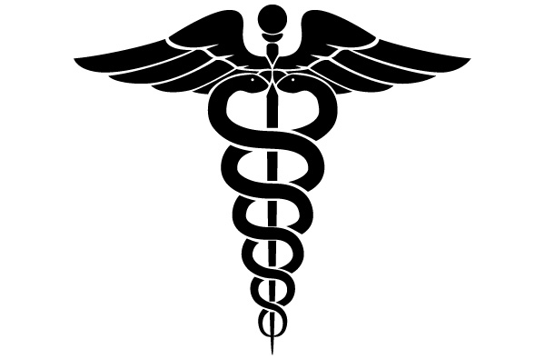
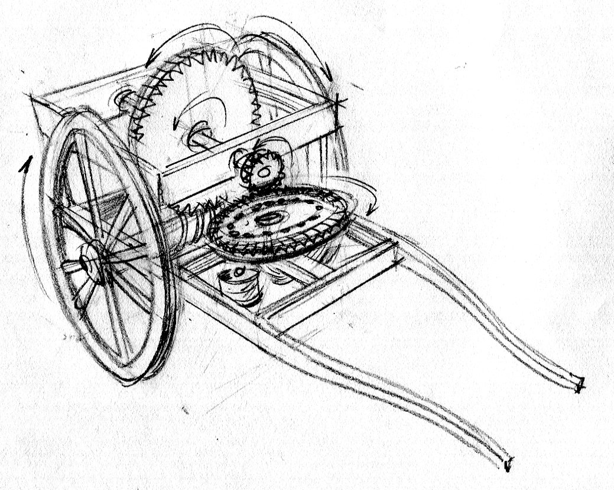
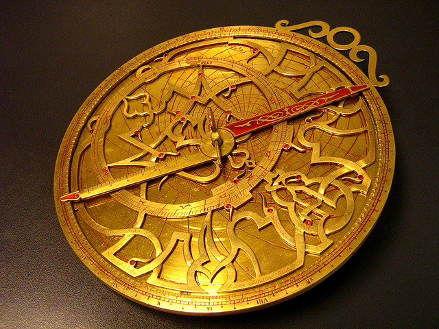

Welcome To
The Greek Archaio-Mouseio

Exhibit 1: The innovation of Medicine
Medicine is the cure to an illness that is caused by either a viral, bacterial, or fungal infection.
The invention works by killing the bacteria/virus/fungi inside of the animal’s body, usually through antiviral/antibacterial/antifungal bacteria. It is used by either eating something or rubbing the medicine on the part of the body that is infected.
It was used in order to get rid of unneeded illnesses and to cure people’s suffering.
This invention made it possible for people to get rid of illnesses much more effectively than just waiting for the illness to be gone by itself.
Exhibit 2: The innovation of Democracy
Democracy is a system of government that lets every single citizen vote, and lets everyone who wants to become president.
This works by letting all citizens vote on who will take part in the government, and Democracy is used to make everything fair in the country so that the people have most of the power as a whole. It was used because this made it so that everyone had equal power and so that everyone could live knowing that they control the government partially. This made it so that nobody overthrows anyone and so that everyone could live in peace.
This made it so that everyone had somewhat equal rights and it made it so that the government was more fair to people.
Early Democracy in Athens only allowed Men to take part in government and voting, while the women weren’t allowed to interfere with government at all. Contrary to the olden days, today in modern-day America, our democracy includes everyone, despite their race, gender, culture, or any other factor that makes them who they are. Also, more than half of the countries today are in some kind of democracy.

Exhibit 3: The innovation of the odometer
The odometer can record the distance of one's travels or any vehicle at all.
The odometer used to be a mechanical device that counts the amount of steps of something like counting steps or a bicycle. This invention is used for journeys and having military strategies on the battlefield top see how far their troops are and such. This was used because the odometer was very useful in seeing how far a person has traveled and if they recorded on the odometer, how many steps they have remaining.
The invention impacted the Greeks' lives by having better military strategies and more organized roads. This could open to a lot of possibilities and could track how big the empire was, how big certain objects were, and give answers to a lot of questions they had.
The invention changed over time by the odometer being on cars, and different other modern inventions. This is mainly used to track distances that the car has traveled or any other vehicle. This is now online and digital like in the Health app. In Ancient Greece, they used to be mechanical with a big machine that people would have to carry around.
Exhibit 4: The innovation of the Astrolabe
The astrolabe is an instrument used to make astronomical measurements.
This invention has sets of dials that were used to determine altitude and latitude, as long as the time was known, the shifting places of stars and planets, and to survey and triangulate one's location on land.
The astrolabe told the time during day or night, found out the time of sunrise and sunset, found the length of the day, and located celestial objects found in the sky.

Greek Gods Section
Greek Gods Section
Credits:
Researchers: Bruce Weng and Ahmet Efe Sarisen
Site developers: Daniel Manita (and the Researchers for their info about the inventions/innovations)
Project workers: Bruce Weng, Ahmet Efe Sarisen, and Daniel Manita